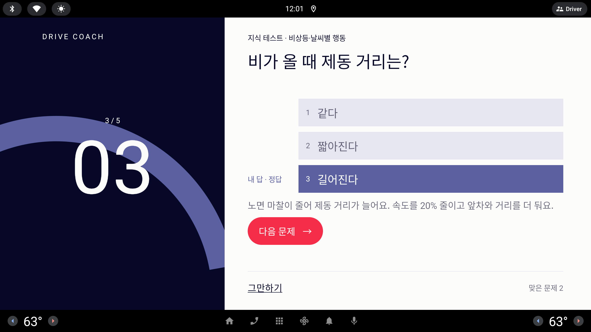

지식 테스트 정답 확인 — 다섯 가지 구성
문제 → 정답 확인 화면. 카드에 질감 그림자, "내 답 / 정답" 표시 위치·크기, 해설·다음 문제 알약의 간격을 다시 짠다.
사용자 피드백 (라운드 21)카드에 그림자를 추가하여 입체감을 주고 싶고, 정답 체크 화면에 구성이 UI/UX 밑 카드, 멘트, 다음문제 알약 등의 간격이 매우 어색하여 5가지 정도 구성을 제안 받아서 적용하고 싶어(특히 내답, 정답 위치랑 크기 정렬 등이 다 맘에 안 들어) (기본적으로 빨간색 주 알약 버튼은 메인과 비슷한 느낌으로 너무 짧지 않게 공통성이 있게 해줘)
시안은 1/3 축소(853×423 px) — 실제 화면은 약 3배(2560×1268 dp)
다섯 시안 공통: 보기 카드 전부 질감 그림자 · 다음 문제 알약 = 설정 화면 "시작" 알약과 같은 폭 240px(실제 720 dp) · 높이 46px(140 dp) · 윗면 하이라이트 · 알약은 오른쪽 아래, 그만하기는 왼쪽 아래(설정 화면의 "돌아가기 ↔ 시작" 배치와 같게) — 문제 화면과 정답 화면에서 알약 자리가 움직이지 않는다.
지금 — 오답(lesson-quiz-answered.png)

지금 — 정답(lesson-quiz-correct.png)

A · 오답
지식 테스트 · 비상등·날씨별 행동
비상등은 언제 켜나요?
1차선을 바꿀 때
2갑자기 서거나 고장·사고로 서 있을 때정답
3터널에 들어갈 때내 답
뒤차에 위험을 알리는 신호예요. 차선을 바꿀 때는 방향지시등을, 터널에 들어갈 때는 전조등을 켜요.
그만하기맞은 문제 1다음 문제
B · 오답
지식 테스트 · 비상등·날씨별 행동
비상등은 언제 켜나요?
1차선을 바꿀 때
2갑자기 서거나 고장·사고로 서 있을 때
3터널에 들어갈 때
뒤차에 위험을 알리는 신호예요. 차선을 바꿀 때는 방향지시등을, 터널에 들어갈 때는 전조등을 켜요.
그만하기맞은 문제 1다음 문제
C · 오답
지식 테스트 · 비상등·날씨별 행동
비상등은 언제 켜나요?
내 답
3터널에 들어갈 때
정답
2갑자기 서거나 고장·사고로 서 있을 때
다른 보기 · 1 차선을 바꿀 때
해설
뒤차에 위험을 알리는 신호예요. 차선을 바꿀 때는 방향지시등을, 터널에 들어갈 때는 전조등을 켜요.그만하기맞은 문제 1다음 문제
D · 오답
지식 테스트 · 비상등·날씨별 행동
비상등은 언제 켜나요?
1차선을 바꿀 때
2갑자기 서거나 고장·사고로 서 있을 때정답
3터널에 들어갈 때내 답
“뒤차에 위험을 알리는 신호예요. 차선을 바꿀 때는 방향지시등을, 터널에 들어갈 때는 전조등을 켜요.
그만하기맞은 문제 1다음 문제
E · 오답
지식 테스트 · 비상등·날씨별 행동
비상등은 언제 켜나요?
1차선을 바꿀 때
2갑자기 서거나 고장·사고로 서 있을 때정답
3터널에 들어갈 때내 답
뒤차에 위험을 알리는 신호예요. 차선을 바꿀 때는 방향지시등을, 터널에 들어갈 때는 전조등을 켜요.
그만하기맞은 문제 1다음 문제
E · 정답 (추천안의 맞은 경우)
지식 테스트 · 비상등·날씨별 행동
비가 올 때 제동 거리는?
1같다
2짧아진다
3길어진다내 답 · 정답
노면 마찰이 줄어 제동 거리가 늘어요. 속도를 20% 줄이고 앞차와 거리를 더 둬요.
그만하기맞은 문제 2다음 문제
추천
E · 판정 패널
결과는 왼쪽 포스터가 크게, 근거(보기·해설)는 오른쪽이 차분하게 — 역할이 갈려 간격이 자연스럽고, 카드 안 배지로 "내 답 / 정답" 위치·크기가 한 줄로 맞는다.
알약은 "시작"과 같은 240×46px(실제 720×140 dp)로 오른쪽 아래 고정. 왼쪽 판정 그림이 부담스러우면 A(배지)만 단독으로 적용해도 정렬 문제는 해결된다.